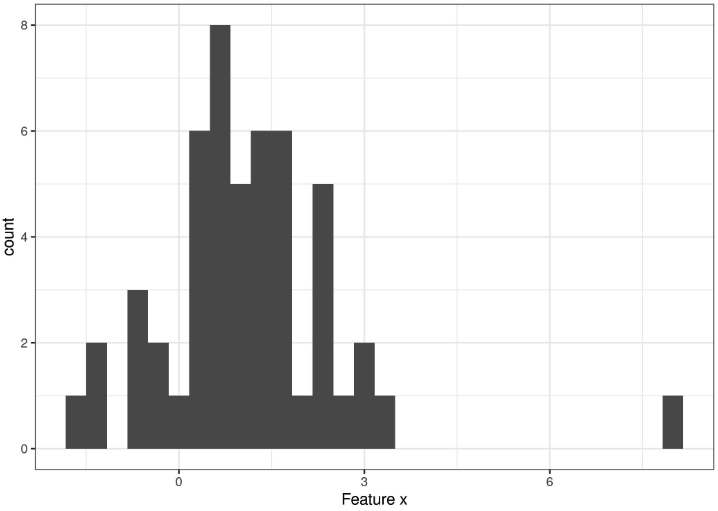
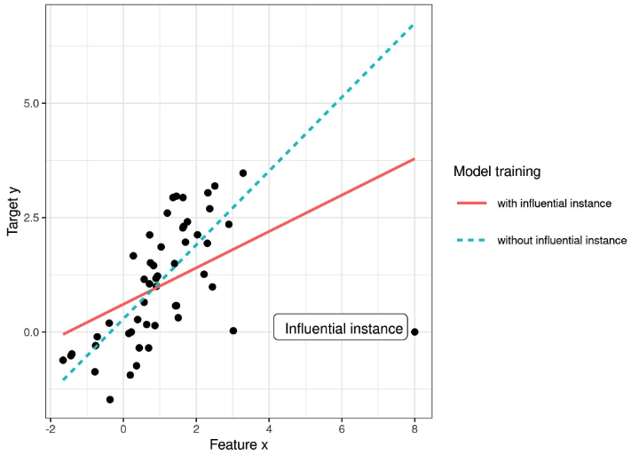
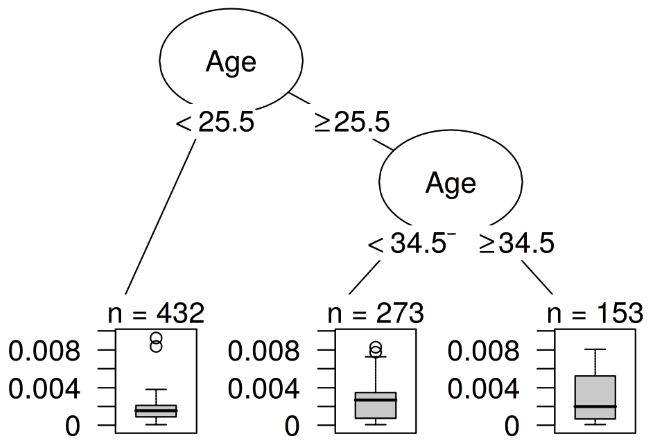
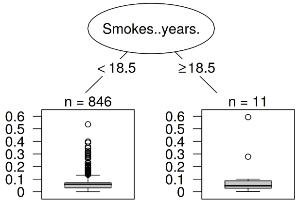
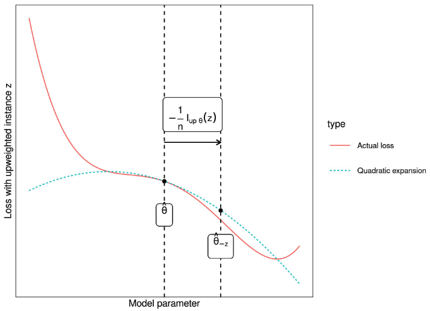

10.5 - Instances Influentes
Les modèles d’apprentissage automatique sont finalement le produit des données d’entraînement et la suppression d’une des instances d’entraînement peut affecter le modèle résultant. Nous qualifierons une instance d’entraînement d’“influente” lorsque sa suppression des données d’entraînement change considérablement les paramètres ou les prédictions du modèle. En identifiant les instances d’entraînement influentes, nous pouvons “déboguer” les modèles d’apprentissage automatique et mieux expliquer leurs comportements et prédictions.
Ce chapitre vous montre deux approches pour identifier les instances influentes, à savoir les diagnostics de suppression et les fonctions d’influence. Les deux approches sont basées sur la statistique robuste, qui fournit des méthodes statistiques moins affectées par les valeurs aberrantes ou les violations des hypothèses du modèle. La statistique robuste fournit également des méthodes pour mesurer la robustesse des estimations à partir des données (comme une estimation moyenne ou les poids d’un modèle de prédiction).
Imaginez que vous voulez estimer le revenu moyen des habitants de votre ville et demandez à dix personnes choisies au hasard dans la rue combien elles gagnent. Outre le fait que votre échantillon est probablement vraiment mauvais, à quel point votre estimation du revenu moyen peut-elle être influencée par une seule personne ? Pour répondre à cette question, vous pouvez recalculer la valeur moyenne en omettant des réponses individuelles ou dériver mathématiquement via des “fonctions d’influence” comment la valeur moyenne peut être influencée. Avec l’approche de suppression, nous recalculons la valeur moyenne dix fois, en omettant une des déclarations de revenus à chaque fois, et mesurons à quel point l’estimation moyenne change. Un grand changement signifie qu’une instance était très influente. La deuxième approche surpondère l’une des personnes par un poids infinitésimalement petit, ce qui correspond au calcul de la première dérivée d’une statistique ou d’un modèle. Cette approche est également connue sous le nom d’“approche infinitésimale” ou “fonction d’influence”. La réponse est, en passant, que votre estimation moyenne peut être très fortement influencée par une seule réponse, puisque la moyenne évolue linéairement avec les valeurs individuelles. Un choix plus robuste est la médiane (la valeur pour laquelle la moitié des gens gagnent plus et l’autre moitié moins), car même si la personne avec le revenu le plus élevé de votre échantillon gagnait dix fois plus, la médiane résultante ne changerait pas.
Les diagnostics de suppression et les fonctions d’influence peuvent également être appliqués aux paramètres ou prédictions des modèles d’apprentissage automatique pour mieux comprendre leur comportement ou pour expliquer des prédictions individuelles. Avant de regarder ces deux approches pour trouver des instances influentes, nous examinerons la différence entre une valeur aberrante et une instance influente.
Valeur extrême
Une valeur aberrante est une instance qui est éloignée des autres instances dans l’ensemble de données. “Éloignée” signifie que la distance, par exemple la distance euclidienne, à toutes les autres instances est très grande. Dans un ensemble de données de nouveau-nés, un nouveau-né pesant 6 kg serait considéré comme une valeur aberrante. Dans un ensemble de données de comptes bancaires comprenant principalement des comptes courants, un compte de prêt dédié (solde négatif important, peu de transactions) serait considéré comme une valeur aberrante. La figure suivante montre une valeur aberrante pour une distribution unidimensionnelle.

Les valeurs extrêmes peuvent représenter des points intéressants (p. ex. critiques). Quand une valeur extrême influence le modèle, elle peut être une instance influente.
Instance influente
Une instance influente est une instance de données dont la suppression a un fort effet sur le modèle entraîné. Plus les paramètres ou les prédictions du modèle changent lorsque le modèle est réentraîné avec une instance particulière retirée des données d’entraînement, plus cette instance est influente. Le fait qu’une instance soit influente pour un modèle entraîné dépend également de sa valeur pour la cible y. La figure suivante montre une instance influente pour un modèle de régression linéaire.

Pourquoi les instances influentes aident-elles à comprendre le modèle ?
L’idée clé derrière les instances influentes pour l’interprétabilité est de remonter aux origines des paramètres et des prédictions du modèle : les données d’entraînement. Un apprenant, c’est-à-dire l’algorithme qui génère le modèle d’apprentissage automatique, est une fonction qui prend des données d’entraînement constituées de caractéristiques X et de la cible y et génère un modèle d’apprentissage automatique. Par exemple, l’apprenant d’un arbre de décision est un algorithme qui sélectionne les caractéristiques de division et les valeurs auxquelles diviser. Un apprenant pour un réseau neuronal utilise la rétropropagation pour trouver les meilleurs poids.

Nous nous demandons comment les paramètres du modèle ou les prédictions changeraient si nous retirions des instances des données d’entraînement dans le processus de formation. Cela contraste avec d’autres approches d’interprétabilité qui analysent comment la prédiction change lorsque nous manipulons les caractéristiques des instances à prédire, telles que les graphiques de dépendance partielle ou l’importance des caractéristiques. Avec les instances influentes, nous ne traitons pas le modèle comme fixe, mais comme une fonction des données d’entraînement. Les instances influentes nous aident à répondre à des questions sur le comportement global du modèle et sur des prédictions individuelles. Quelles étaient les instances les plus influentes pour les paramètres du modèle ou les prédictions dans l’ensemble ? Quelles étaient les instances les plus influentes pour une prédiction particulière ? Les instances influentes nous indiquent pour quelles instances le modèle pourrait avoir des problèmes, quelles instances d’entraînement devraient être vérifiées pour des erreurs et donnent une impression de la robustesse du modèle. Nous pourrions ne pas faire confiance à un modèle si une seule instance a une forte influence sur les prédictions et les paramètres du modèle. Au moins, cela nous inciterait à enquêter davantage.
Comment pouvons-nous trouver des instances influentes ? Nous avons deux façons de mesurer l’influence : Notre première option est de supprimer l’instance des données d’entraînement, de réentraîner le modèle sur l’ensemble de données d’entraînement réduit et d’observer la différence dans les paramètres du modèle ou les prédictions (soit individuellement, soit sur l’ensemble complet des données). La deuxième option est de surpondérer une instance de données en approximant les changements de paramètres basés sur les gradients des paramètres du modèle. L’approche de suppression est plus facile à comprendre et motive l’approche de surpondération, donc nous commençons par la première.
10.5.1 - Diagnostics par suppression
Les statisticiens ont déjà beaucoup recherché dans le domaine des instances influentes, en particulier pour les modèles de régression linéaire (généralisée). Lorsque vous recherchez “observations influentes”, les premiers résultats de recherche concernent des mesures telles que DFBETA et la distance de Cook. DFBETA mesure l’effet de la suppression d’une instance sur les paramètres du modèle. La distance de Cook (Cook, 19771) mesure l’effet de la suppression d’une instance sur les prédictions du modèle. Pour les deux mesures, nous devons réentraîner le modèle à plusieurs reprises, en omettant des instances individuelles à chaque fois. Les paramètres ou prédictions du modèle avec toutes les instances sont comparés avec les paramètres ou prédictions du modèle avec l’une des instances supprimée des données d’entraînement.
DFBETA est défini comme suit :
\[DFBETA_{i}=\beta-\beta^{(-i)}\]
où \(\beta\) est le vecteur de poids lorsque le modèle est entraîné sur toutes les instances de données, et \(\beta^{(-i)}\) le vecteur de poids lorsque le modèle est entraîné sans l’instance \(i\). Assez intuitif je dirais. DFBETA ne fonctionne que pour les modèles avec des paramètres de poids, tels que la régression logistique ou les réseaux neuronaux, mais pas pour des modèles tels que les arbres de décision, les ensembles d’arbres, certaines machines à vecteurs de support, etc.
La distance de Cook a été inventée pour les modèles de régression linéaire et des approximations pour les modèles de régression linéaire généralisée existent. La distance de Cook pour une instance d’entraînement est définie comme la somme (mise à l’échelle) des différences au carré dans le résultat prédit lorsque la \(i^{ième}\)instance est retirée de l’entraînement du modèle.
\[D_i=\frac{\sum_{j=1}^n(\hat{y}_j-\hat{y}_{j}^{(-i)})^2}{p\cdot{}MSE}\]
où le numérateur est la différence au carré entre la prédiction du modèle avec et sans la \(i^{ième}\) instance, sommée sur l’ensemble de données. Le dénominateur est le nombre de caractéristiques \(p\) fois l’erreur quadratique moyenne (MSE : Mean Square Error). Le dénominateur est le même pour toutes les instances, peu importe quelle instance \(i\) est retirée. La distance de Cook nous indique à quel point le résultat prédit d’un modèle linéaire change lorsque nous retirons la \(i^{ième}\) instance de l’entraînement.
Pouvons-nous utiliser la distance de Cook et DFBETA pour tout modèle d’apprentissage automatique ? DFBETA nécessite des paramètres de modèle, donc cette mesure fonctionne uniquement pour les modèles paramétrés. La distance de Cook ne nécessite aucun paramètre de modèle. Fait intéressant, la distance de Cook n’est généralement pas vue en dehors du contexte des modèles linéaires et des modèles linéaires généralisés, mais l’idée de prendre la différence entre les prédictions du modèle avant et après la suppression d’une instance particulière est très générale. Un problème avec la définition de la distance de Cook est la MSE, qui n’est pas significative pour tous les types de modèles de prédiction (par exemple, la classification).
La mesure d’influence la plus simple pour l’effet sur les prédictions du modèle peut s’écrire comme suit :
\[\text{Influence}^{(-i)}=\frac{1}{n}\sum_{j=1}^{n}\left|\hat{y}_j-\hat{y}_{j}^{(-i)}\right|\]
Cette expression est essentiellement le numérateur de la distance de Cook, avec la différence que la différence absolue est ajoutée au lieu des différences au carré. C’était un choix que j’ai fait, car il a du sens pour les exemples plus tard. La forme générale des mesures de diagnostic de suppression consiste à choisir une mesure (comme le résultat prédit) et à calculer la différence de la mesure pour le modèle entraîné sur toutes les instances et lorsque l’instance est supprimée.
Nous pouvons facilement décomposer l’influence pour expliquer pour la prédiction de l’instance \(j\) quelle était l’influence de l’instance d’entraînement \(i^{ième}\) :
\[\text{Influence}_{j}^{(-i)}=\left|\hat{y}_j-\hat{y}_{j}^{(-i)}\right|\]
Cela fonctionnerait également pour la différence dans les paramètres du modèle ou la différence dans la perte. Dans l’exemple suivant, nous utiliserons ces mesures d’influence simples.
Exemple de diagnostic par suppression
Dans l’exemple suivant, nous entraînons une machine à vecteurs de support pour prédire le cancer du col de l’utérus en fonction des facteurs de risque et mesurons quelles instances d’entraînement ont été les plus influentes dans l’ensemble et pour une prédiction particulière. Étant donné que la prédiction du cancer est un problème de classification, nous mesurons l’influence comme la différence de probabilité prédite pour le cancer. Une instance est influente si la probabilité prédite augmente ou diminue fortement en moyenne dans l’ensemble de données lorsque l’instance est retirée de l’entraînement du modèle. La mesure de l’influence pour toutes les r nrow(cervical) instances d’entraînement nécessite d’entraîner le modèle une fois sur toutes les données et de le réentraîner r nrow(cervical) fois (= taille des données d’entraînement) avec une des instances retirée à chaque fois.
L’instance la plus influente a une mesure d’influence d’environ r sprintf("%.2f", abs(df[1,"influence"])). Une influence de r sprintf('%.2f', abs(df[1,"influence"])) signifie que si nous retirons l’instance r df$id[1], la probabilité prédite change en moyenne de r sprintf('%.0f', 100 * df[1,"influence"]) points de pourcentage. C’est assez considérable étant donné que la probabilité prédite moyenne pour le cancer est de r sprintf('%.1f', 100 *mean(predicted.orig))%. La valeur moyenne des mesures d’influence sur toutes les suppressions possibles est de r sprintf('%.1f', 100 * mean(abs(df$influence))) points de pourcentage. Maintenant, nous savons quelles sont les instances de données les plus influentes pour le modèle. Cela est déjà utile à savoir pour déboguer les données. Y a-t-il une instance problématique ? Y a-t-il des erreurs de mesure ? Les instances influentes sont les premières à vérifier pour les erreurs, car chaque erreur en elles influence fortement les prédictions du modèle.
En dehors du débogage du modèle, pouvons-nous apprendre quelque chose pour mieux comprendre le modèle ? Imprimer simplement les dix instances les plus influentes n’est pas très utile, car il s’agit juste d’une table d’instances avec de nombreuses caractéristiques. Toutes les méthodes qui retournent des instances en sortie n’ont de sens que si nous avons un bon moyen de les représenter. Mais nous pouvons mieux comprendre quel type d’instances est influent lorsque nous nous demandons : Qu’est-ce qui distingue une instance influente d’une instance non influente ? Nous pouvons transformer cette question en un problème de régression et modéliser l’influence d’une instance en fonction de ses valeurs de caractéristiques. Nous sommes libres de choisir n’importe quel modèle du chapitre sur les Modèles d’Apprentissage Automatique Interprétables. Pour cet exemple, j’ai choisi un arbre de décision (figure suivante) qui montre que les données des femmes de 35 ans et plus étaient les plus influentes pour la machine à vecteurs de support. Parmi toutes les femmes de l’ensemble de données r sum(cervical$Age >= 35) sur r nrow(cervical) étaient âgées de plus de 35 ans. Dans le chapitre sur les Graphiques de Dépendance Partielle, nous avons vu qu’après 40 ans, il y a une augmentation marquée de la probabilité prédite de cancer et l’Importance des Caractéristiques a également détecté l’âge comme l’une des caractéristiques les plus importantes. L’analyse de l’influence nous dit que le modèle devient de plus en plus instable lors de la prédiction du cancer pour les âges plus élevés. Cela en soi est une information précieuse. Cela signifie que les erreurs dans ces instances peuvent avoir un fort effet sur le modèle.

Cette première analyse d’influence a révélé l’instance la plus influente dans l’ensemble. Maintenant, nous sélectionnons l’une des instances, à savoir l’instance r i, pour laquelle nous voulons expliquer la prédiction en trouvant les instances de données d’entraînement les plus influentes. C’est comme une question contrefactuelle : Comment la prédiction pour l’instance r i changerait-elle si nous omettions l’instance i du processus d’entraînement ? Nous répétons cette suppression pour toutes les instances. Ensuite, nous sélectionnons les instances d’entraînement qui entraînent le plus grand changement dans la prédiction de l’instance r i lorsqu’elles sont omises de l’entraînement et les utilisons pour expliquer la prédiction du modèle pour cette instance. J’ai choisi d’expliquer la prédiction pour l’instance r i car c’est l’instance avec la probabilité prédite la plus élevée de cancer (r sprintf('%.2f', 100 * predicted.orig[i])%), que je pensais être un cas intéressant à analyser plus en profondeur. Nous pourrions retourner, disons, les 10 instances les plus influentes pour prédire l’instance r i imprimées sous forme de tableau. Pas très utile, car nous ne pourrions pas voir grand-chose. Encore une fois, il est plus logique de découvrir ce qui distingue les instances influentes des instances non influentes en analysant leurs caractéristiques. Nous utilisons un arbre de décision formé pour prédire l’influence étant donné les caractéristiques, mais en réalité, nous le détournons seulement pour trouver une structure et non pour prédire réellement quelque chose. L’arbre de décision suivant montre quel type d’instances d’entraînement était le plus influent pour prédire la r i instance.

Les instances de données de femmes qui ont fumé ou fument depuis 18,5 ans ou plus ont une forte influence sur la prédiction de l’instance r i. La femme derrière l’instance r i a fumé pendant r cervical$Smokes..years.[i] ans. Dans les données, r sum(cervical$Smokes..years >= 18.5) femmes (r sprintf('%.2f', 100 * mean(cervical$Smokes..years >= 18.5))%) ont fumé pendant 18,5 ans ou plus. Toute erreur commise dans la collecte du nombre d’années de tabagisme de l’une de ces femmes aura un impact énorme sur le résultat prédit pour l’instance r i.
Le changement le plus extrême dans la prédiction se produit lorsque nous supprimons l’instance numéro r worst.case.index. La patiente aurait fumé pendant r cervical$Smokes..years.[worst.case.index] ans, ce qui correspond aux résultats de l’arbre de décision. La probabilité prédite pour l’instance r i passe de r sprintf('%.2f', 100 * predicted.orig[i])% à r sprintf('%.2f', 100 * (predicted.orig[i] - cervical.200$influence[worst.case.index]))% si nous retirons l’instance r worst.case.index !
Si nous examinons de plus près les caractéristiques de l’instance la plus influente, nous pouvons voir un autre problème possible. Les données indiquent que la femme a 28 ans et fume depuis 22 ans. Soit c’est un cas vraiment extrême et elle a vraiment commencé à fumer à 6 ans, soit c’est une erreur de données. Je penche pour cette dernière hypothèse. C’est certainement une situation dans laquelle nous devons remettre en question l’exactitude des données.
Ces exemples ont montré à quel point il est utile d’identifier les instances influentes pour déboguer des modèles. Un problème avec l’approche proposée est que le modèle doit être réentraîné pour chaque instance d’entraînement. Le réentraînement complet peut être assez lent, car si vous avez des milliers d’instances d’entraînement, vous devrez réentraîner votre modèle des milliers de fois. En supposant que le modèle prend un jour pour s’entraîner et que vous avez 1000 instances d’entraînement, alors le calcul des instances influentes – sans parallélisation – prendra presque 3 ans. Personne n’a le temps pour cela. Dans le reste de ce chapitre, je vous montrerai une méthode qui ne nécessite pas de réentraîner le modèle.
10.5.2 - Fonction d’influence
Vous : Je veux connaître l’influence qu’une instance d’entraînement a sur une prédiction particulière.
Recherche : Vous pouvez supprimer l’instance d’entraînement, réentraîner le modèle et mesurer la différence dans la prédiction.
Vous : Génial ! Mais avez-vous une méthode pour moi qui fonctionne sans réentraînement ? Cela prend tellement de temps.
Recherche : Avez-vous un modèle avec une fonction de perte qui est deux fois différentiable par rapport à ses paramètres ?
Vous : J’ai entraîné un réseau neuronal avec la perte logistique. Donc oui.
Recherche : Alors vous pouvez approximer l’influence de l’instance sur les paramètres du modèle et sur la prédiction avec des fonctions d’influence. La fonction d’influence est une mesure de la force avec laquelle les paramètres du modèle ou les prédictions dépendent d’une instance d’entraînement. Au lieu de supprimer l’instance, la méthode surpondère l’instance dans la perte par un très petit pas. Cette méthode implique d’approximer la perte autour des paramètres actuels du modèle en utilisant le gradient et la matrice hessienne. La surpondération de la perte est similaire à la suppression de l’instance.
Vous : Super, c’est ce que je recherche !
Koh et Liang (2017)2 ont suggéré d’utiliser les fonctions d’influence, une méthode de statistique robuste, pour mesurer comment une instance influence les paramètres du modèle ou les prédictions. Comme avec les diagnostics de suppression, les fonctions d’influence retracent les paramètres du modèle et les prédictions jusqu’à l’instance d’entraînement responsable. Cependant, au lieu de supprimer des instances d’entraînement, la méthode approxime à quel point le modèle change lorsque l’instance est surpondérée dans le risque empirique (somme de la perte sur les données d’entraînement).
La méthode des fonctions d’influence nécessite un accès au gradient de la perte par rapport aux paramètres du modèle, ce qui ne fonctionne que pour un sous-ensemble de modèles d’apprentissage automatique. La régression logistique, les réseaux neuronaux et les machines à vecteurs de support se qualifient, mais les méthodes basées sur des arbres comme les forêts aléatoires ne le font pas. Les fonctions d’influence aident à comprendre le comportement du modèle, à déboguer le modèle et à détecter des erreurs dans l’ensemble de données.
La section suivante explique l’intuition et les mathématiques derrière les fonctions d’influence.
Mathématiques derrière les fonctions d’influence
L’idée clé derrière les fonctions d’influence est de surpondérer la perte d’une instance d’entraînement par un petit pas infinitésimal \(\epsilon\), ce qui entraîne de nouveaux paramètres du modèle :
\[\hat{\theta}_{\epsilon,z}=\arg\min_{\theta{}\in\Theta}(1-\epsilon)\frac{1}{n}\sum_{i=1}^n{}L(z_i,\theta)+\epsilon{}L(z,\theta)\]
où \(\theta\) est le vecteur de paramètres du modèle et \(\hat{\theta}_{\epsilon,z}\) est le vecteur de paramètres après la surpondération de \(z\) par un très petit nombre \(\epsilon\). \(L\) est la fonction de perte avec laquelle le modèle a été entraîné, \(z_i\) est les données d’entraînement et \(z\) est l’instance d’entraînement que nous voulons surpondérer pour simuler sa suppression. L’intuition derrière cette formule est : À quel point la perte changera-t-elle si nous surpondérons une instance particulière \(z_i\) des données d’entraînement d’un peu (\(\epsilon\)) et sous-pondérons les autres instances de données en conséquence ? À quoi ressemblerait le vecteur de paramètres pour optimiser cette nouvelle perte combinée ? La fonction d’influence des paramètres, c’est-à-dire l’influence de la surpondération de l’instance d’entraînement \(z\) sur les paramètres, peut être calculée comme suit.
\[I_{\text{up,params}}(z)=\left.\frac{d{}\hat{\theta}_{\epsilon,z}}{d\epsilon}\right|_{\epsilon=0}=-H_{\hat{\theta}}^{-1}\nabla_{\theta}L(z,\hat{\theta})\]
La dernière expression \(\nabla_{\theta}L(z,\hat{\theta})\) est le gradient de la perte par rapport aux paramètres pour l’instance d’entraînement surpondérée. Le gradient est le taux de changement de la perte de l’instance d’entraînement. Il nous indique de combien la perte change lorsque nous changeons les paramètres du modèle \(\hat{\theta}\) d’un peu. Une entrée positive dans le vecteur de gradient signifie qu’une petite augmentation du paramètre du modèle correspondant augmente la perte, une entrée négative signifie que l’augmentation du paramètre réduit la perte. La première partie \(H^{-1}_{\hat{\theta}}\) est la matrice hessienne inverse (deuxième dérivée de la perte par rapport aux paramètres du modèle). La matrice hessienne est le taux de changement du gradient, ou exprimée en termes de perte, c’est le taux de changement du taux de changement de la perte. Elle peut être estimée en utilisant :
\[H_{\theta}=\frac{1}{n}\sum_{i=1}^n\nabla^2_{\hat{\theta}}L(z_i,\hat{\theta})\]
Plus informellement : La matrice hessienne enregistre la courbure de la perte à un certain point. La hessienne est une matrice et non juste un vecteur, car elle décrit la courbure de la perte et cette courbure dépend de la direction dans laquelle nous regardons. Le calcul réel de la matrice hessienne est chronophage si vous avez de nombreux paramètres. Koh et Liang ont suggéré quelques astuces pour la calculer efficacement, ce qui va au-delà du cadre de ce chapitre. Mettre à jour les paramètres du modèle, comme décrit par la formule ci-dessus, est équivalent à prendre une seule étape de Newton après avoir formé une expansion quadratique autour des paramètres estimés du modèle.
Quelle intuition se cache derrière cette formule de fonction d’influence ? La formule vient de la formation d’une expansion quadratique autour des paramètres \(\hat{\theta}\). Cela signifie que nous ne savons pas réellement, ou il est trop complexe de calculer comment exactement la perte de l’instance z changera lorsqu’elle est supprimée/surpondérée. Nous approximons localement la fonction en utilisant des informations sur la pente (i.e gradient) et la courbure (i.e matrice hessienne) à la configuration actuelle des paramètres du modèle. Avec cette approximation de la perte, nous pouvons calculer à quoi ressembleraient approximativement les nouveaux paramètres si nous surpondérions l’instance z :
\[\hat{\theta}_{-z}\approx\hat{\theta}-\frac{1}{n}I_{\text{up,params}}(z)\]
Le vecteur de paramètres approximatif est essentiellement le paramètre original moins le gradient de la perte de \(z\) (car nous voulons diminuer la perte) ajusté par la courbure (i.e multiplié par la matrice hessienne inverse) et ajusté par \(1/n\), car c’est le poids d’une seule instance d’entraînement.
La figure suivante montre comment fonctionne la surpondération. L’axe des \(x\) montre la valeur du paramètre \(\theta\) et l’axe des \(y\) la valeur correspondante de la perte avec l’instance \(z\) surpondérée. Le paramètre du modèle est unidimensionnel à des fins de démonstration, mais en réalité, il est généralement de haute dimension. Nous ne nous déplaçons que de \(1/n\) dans la direction de l’amélioration de la perte pour l’instance \(z\). Nous ne savons pas comment la perte changerait réellement lorsque nous supprimons \(z\), mais avec la première et la deuxième dérivée de la perte, nous créons cette approximation quadratique autour de notre paramètre de modèle actuel et prétendons que c’est ainsi que la perte réelle se comporterait.

Nous n’avons pas réellement besoin de calculer les nouveaux paramètres, mais nous pouvons utiliser la fonction d’influence comme mesure de l’influence de \(z\) sur les paramètres.
Comment les prédictions changent-elles lorsque nous surpondérons l’instance d’entraînement \(z\) ? Nous pouvons soit calculer les nouveaux paramètres, puis faire des prédictions en utilisant le modèle nouvellement paramétré, soit nous pouvons également calculer directement l’influence de l’instance \(z\) sur les prédictions, car nous pouvons calculer l’influence en utilisant la règle de chaîne :
\[\begin{align*}I_{up,loss}(z,z_{test})&=\left.\frac{d{}L(z_{test},\hat{\theta}_{\epsilon,z})}{d\epsilon}\right|_{\epsilon=0}\\&=\left.\nabla_{\theta}L(z_{test},\hat{\theta})^T\frac{d\hat{\theta}_{\epsilon,z}}{d\epsilon}\right|_{\epsilon=0}\\&=-\nabla_{\theta}L(z_{test},\hat{\theta})^T{}H^{-1}_{\theta}\nabla_{\theta}L(z,\hat{\theta})\end{align*}\]
La première ligne de cette équation signifie que nous mesurons l’influence d’une instance d’entraînement sur une certaine prédiction \(z_{test}\) comme un changement de perte de l’instance de test lorsque nous surpondérons l’instance \(z\) et obtenons de nouveaux paramètres \(\hat{\theta}_{\epsilon,z}\). Pour la deuxième ligne de l’équation, nous avons appliqué la règle de chaîne des dérivées et obtenons la dérivée de la perte de l’instance de test par rapport aux paramètres multipliée par l’influence de \(z\) sur les paramètres. Dans la troisième ligne, nous remplaçons l’expression par la fonction d’influence pour les paramètres. Le premier terme de la troisième ligne \(\nabla_{\theta}L(z_{test},\hat{\theta})^T{}\) est le gradient de l’instance de test par rapport aux paramètres du modèle.
Avoir une formule est formidable et la manière scientifique et précise de montrer les choses. Mais je pense qu’il est très important de comprendre l’intuition derrière la formule. La formule pour \(I_{\text{up,loss}}\) indique que la fonction d’influence de l’instance d’entraînement \(z\) sur la prédiction d’une instance \(z_{test}\) est “à quel point l’instance réagit à un changement des paramètres du modèle” multipliée par “à quel point les paramètres changent lorsque nous surpondérons l’instance \(z\)”. Une autre façon de lire la formule : L’influence est proportionnelle à la taille des gradients pour la perte d’entraînement et la perte de test. Plus le gradient de la perte d’entraînement est élevé, plus son influence sur les paramètres et plus l’influence sur la prédiction de test est élevée. Plus le gradient de la prédiction de test est élevé, plus l’instance de test est influençable. L’ensemble du construct peut également être vu comme une mesure de la similarité (telle qu’apprise par le modèle) entre l’instance d’entraînement et l’instance de test.
C’est tout pour la théorie et l’intuition. La section suivante explique comment les fonctions d’influence peuvent être appliquées.
Application des Fonctions d’Influence
Les fonctions d’influence ont de nombreuses applications, dont certaines ont déjà été présentées dans ce chapitre.
Comprendre le comportement du modèle
Différents modèles d’apprentissage automatique ont différentes manières de faire des prédictions. Même si deux modèles ont la même performance, la manière dont ils font des prédictions à partir des caractéristiques peut être très différente et donc échouer dans différents scénarios. Comprendre les faiblesses particulières d’un modèle en identifiant des instances influentes aide à former un “modèle mental” du comportement du modèle d’apprentissage automatique dans votre esprit.
Gérer les inadéquations de domaine / Déboguer les erreurs du modèle
La gestion de l’inadéquation de domaine est étroitement liée à une meilleure compréhension du comportement du modèle. L’inadéquation de domaine signifie que la distribution des données d’entraînement et de test est différente, ce qui peut amener le modèle à mal fonctionner sur les données de test. Les fonctions d’influence peuvent identifier des instances d’entraînement qui ont causé l’erreur. Supposons que vous avez formé un modèle de prédiction pour le résultat de patients ayant subi une chirurgie. Tous ces patients viennent du même hôpital. Maintenant, vous utilisez le modèle dans un autre hôpital et constatez qu’il ne fonctionne pas bien pour de nombreux patients. Bien sûr, vous supposez que les deux hôpitaux ont des patients différents, et si vous regardez leurs données, vous pouvez voir qu’ils diffèrent dans de nombreuses caractéristiques. Mais quelles sont les caractéristiques ou les instances qui ont “cassé” le modèle ? Ici aussi, les instances influentes sont un bon moyen de répondre à cette question. Vous prenez l’un des nouveaux patients, pour lequel le modèle a fait une fausse prédiction, trouvez et analysez les instances les plus influentes. Par exemple, cela pourrait montrer que le deuxième hôpital a en moyenne des patients plus âgés et les instances les plus influentes des données d’entraînement sont les quelques patients plus âgés du premier hôpital et le modèle manquait simplement de données pour apprendre à bien prédire ce sous-groupe. La conclusion serait que le modèle doit être entraîné sur plus de patients plus âgés pour bien fonctionner dans le deuxième hôpital.
Corriger les données d’entraînement
Si vous avez une limite sur le nombre d’instances d’entraînement que vous pouvez vérifier pour leur exactitude, comment faire une sélection efficace ? La meilleure façon est de sélectionner les instances les plus influentes, car – par définition – elles ont le plus d’influence sur le modèle. Même si vous aviez une instance avec des valeurs manifestement incorrectes, si l’instance n’est pas influente et que vous avez besoin des données uniquement pour le modèle de prédiction, il est préférable de vérifier les instances influentes. Par exemple, vous entraînez un modèle pour prédire si un patient doit rester à l’hôpital ou être libéré prématurément. Vous voulez vraiment vous assurer que le modèle est robuste et fait des prédictions correctes, car une libération erronée d’un patient peut avoir de mauvaises conséquences. Les dossiers des patients peuvent être très désordonnés, donc vous n’avez pas une confiance parfaite dans la qualité des données. Mais vérifier les informations des patients et les corriger peut prendre beaucoup de temps, car une fois que vous avez signalé quels patients vous devez vérifier, l’hôpital doit réellement envoyer quelqu’un pour examiner de plus près les dossiers des patients sélectionnés, qui pourraient être manuscrits et se trouver dans une archive. Vérifier les données d’un patient pourrait prendre une heure ou plus. Compte tenu de ces coûts, il est logique de vérifier seulement quelques instances de données importantes. La meilleure façon est de sélectionner des patients qui ont eu une forte influence sur le modèle de prédiction. Koh et Liang (2017) ont montré que ce type de sélection fonctionne beaucoup mieux qu’une sélection aléatoire ou la sélection de ceux avec la perte la plus élevée ou une classification incorrecte.
10.5.3 - Avantages d’identifier les instances influentes
Les approches des diagnostics de suppression et des fonctions d’influence sont très différentes des approches principalement basées sur la perturbation des caractéristiques présentées dans le chapitre Modèle-Agnostique. Examiner les instances influentes met en évidence le rôle des données d’entraînement dans le processus d’apprentissage. Cela fait des fonctions d’influence et des diagnostics de suppression l’un des meilleurs outils de débogage pour les modèles d’apprentissage automatique. Parmi les techniques présentées dans ce livre, ce sont les seules qui aident directement à identifier les instances qui devraient être vérifiées pour des erreurs.
Les diagnostics de suppression sont agnostiques au modèle, ce qui signifie que l’approche peut être appliquée à n’importe quel modèle. De même, les fonctions d’influence basées sur les dérivées peuvent être appliquées à une large classe de modèles.
Nous pouvons utiliser ces méthodes pour comparer différents modèles d’apprentissage automatique et mieux comprendre leurs comportements différents, allant au-delà de la comparaison de la seule performance prédictive.
Nous n’avons pas parlé de ce sujet dans ce chapitre, mais les fonctions d’influence via des dérivées peuvent également être utilisées pour créer des données d’entraînement adverses. Ce sont des instances qui sont manipulées de telle manière que le modèle ne peut pas prédire correctement certaines instances de test lorsque le modèle est entraîné sur ces instances manipulées. La différence avec les méthodes du chapitre Exemples Adverses est que l’attaque a lieu pendant le temps d’entraînement, également connue sous le nom d’attaques de contamination. Si cela vous intéresse, lisez l’article de Koh et Liang (2017).
Pour les diagnostics de suppression et les fonctions d’influence, nous avons considéré la différence dans la prédiction et pour la fonction d’influence l’augmentation de la perte. Mais, en réalité, l’approche est généralisable à toute question de la forme : “Que se passe-t-il pour … lorsque nous supprimons ou surpondérons l’instance \(z\) ?”, où vous pouvez remplir “…” avec toute fonction de votre modèle de votre choix. Vous pouvez analyser à quel point une instance d’entraînement influence la perte globale du modèle. Vous pouvez analyser à quel point une instance d’entraînement influence l’importance des caractéristiques. Vous pouvez analyser à quel point une instance d’entraînement influence la caractéristique sélectionnée pour la première division lors de l’entraînement d’un arbre de décision.
Il est également possible d’identifier des groupes d’instances influentes3.
10.5.4 - Inconvénients d’identifier les instances influentes
Les diagnostics de suppression sont très coûteux à calculer car ils nécessitent un réentraînement. Mais l’histoire a montré que les ressources informatiques augmentent constamment. Un calcul qui, il y a 20 ans, était impensable en termes de ressources peut facilement être effectué avec votre smartphone. Vous pouvez entraîner des modèles avec des milliers d’instances d’entraînement et des centaines de paramètres sur un ordinateur portable en quelques secondes ou minutes. Il n’est donc pas difficile d’imaginer que les diagnostics de suppression fonctionneront sans problème même avec de grands réseaux neuronaux dans 10 ans.
Les fonctions d’influence sont une bonne alternative aux diagnostics de suppression, mais uniquement pour les modèles avec une fonction de perte différentiable au 2ème ordre par rapport à ses paramètres, tels que les réseaux neuronaux. Elles ne fonctionnent pas pour les méthodes basées sur les arbres comme les forêts aléatoires, les arbres boostés ou les arbres de décision. Même si vous avez des modèles avec des paramètres et une fonction de perte, la perte peut ne pas être différentiable. Mais pour le dernier problème, il y a une astuce : Utilisez une perte différentiable comme substitut pour calculer l’influence lorsque, par exemple, le modèle sous-jacent utilise la perte Hinge au lieu d’une perte différentiable. La perte est remplacée par une version lissée de la perte problématique pour les fonctions d’influence, mais le modèle peut toujours être entraîné avec la perte non lisse.
Les fonctions d’influence ne sont qu’approximatives, car l’approche forme une expansion quadratique autour des paramètres. L’approximation peut être erronée et l’influence d’une instance peut en réalité être plus élevée ou plus faible lorsqu’elle est supprimée. Koh et Liang (2017) ont montré pour certains exemples que l’influence calculée par la fonction d’influence était proche de la mesure d’influence obtenue lorsque le modèle était réellement réentraîné après la suppression de l’instance. Mais il n’y a aucune garantie que l’approximation sera toujours aussi proche.
Il n’y a pas de seuil clair de la mesure d’influence à partir duquel nous appelons une instance influente ou non influente. Il est utile de classer les instances par influence, mais il serait formidable de disposer des moyens non seulement de trier les instances, mais aussi de distinguer réellement entre influentes et non influentes. Par exemple, si vous identifiez les 10 instances d’entraînement les plus influentes pour une instance de test, certaines d’entre elles peuvent ne pas être influentes car, par exemple, seules les 3 premières étaient réellement influentes.
10.5.5 - Logiciel et alternatives
Les diagnostics de suppression sont très simples à mettre en œuvre. Consultez le code que j’ai écrit pour les exemples de ce chapitre.
Accès au code de cette page dans Github -> python + FR + allégée ?
Pour les modèles linéaires et les modèles linéaires généralisés, de nombreuses mesures d’influence comme la distance de Cook sont implémentées dans R dans le package stats.
Equivalent(s) Python ?
Koh et Liang ont publié le code Python pour les fonctions d’influence de leur article dans un dépôt. C’est génial ! Malheureusement, il s’agit “seulement” du code de l’article et non d’un module Python maintenu et documenté. Le code est axé sur la bibliothèque Tensorflow, donc vous ne pouvez pas l’utiliser directement pour des modèles boîte noire utilisant d’autres frameworks, comme sci-kit learn.
Et depuis ?
Notes de bas de page
Cook, R. Dennis. “Detection of influential observation in linear regression.” Technometrics 19.1 (1977): 15-18.↩︎
Koh, Pang Wei, and Percy Liang. “Understanding black-box predictions via influence functions.” arXiv preprint arXiv:1703.04730 (2017).↩︎
Koh, Pang Wei, Kai-Siang Ang, Hubert HK Teo, and Percy Liang. “On the accuracy of influence functions for measuring group effects.” arXiv preprint arXiv:1905.13289 (2019).↩︎